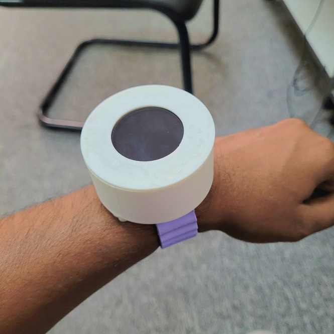
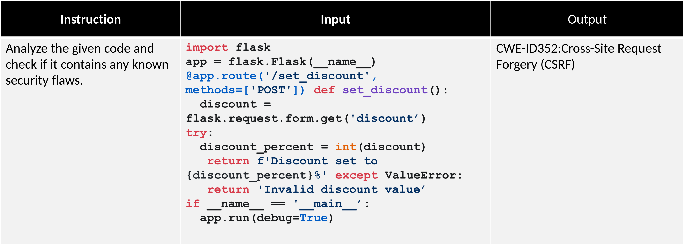
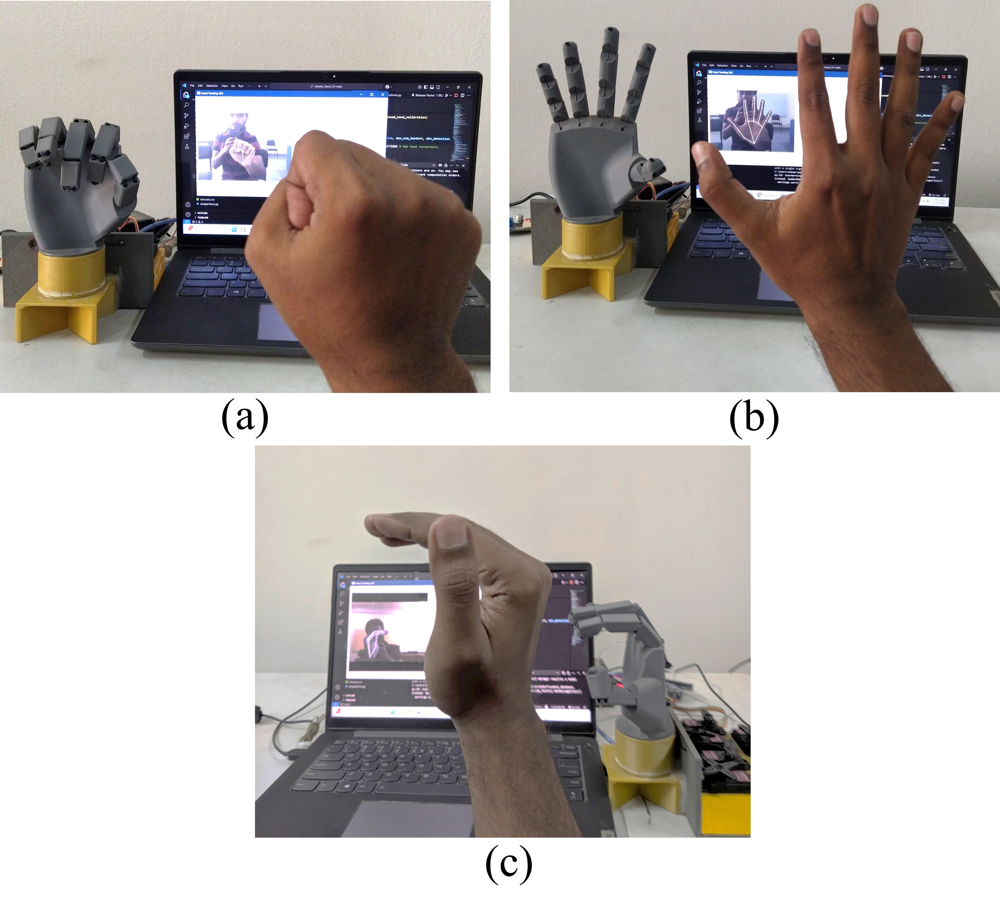
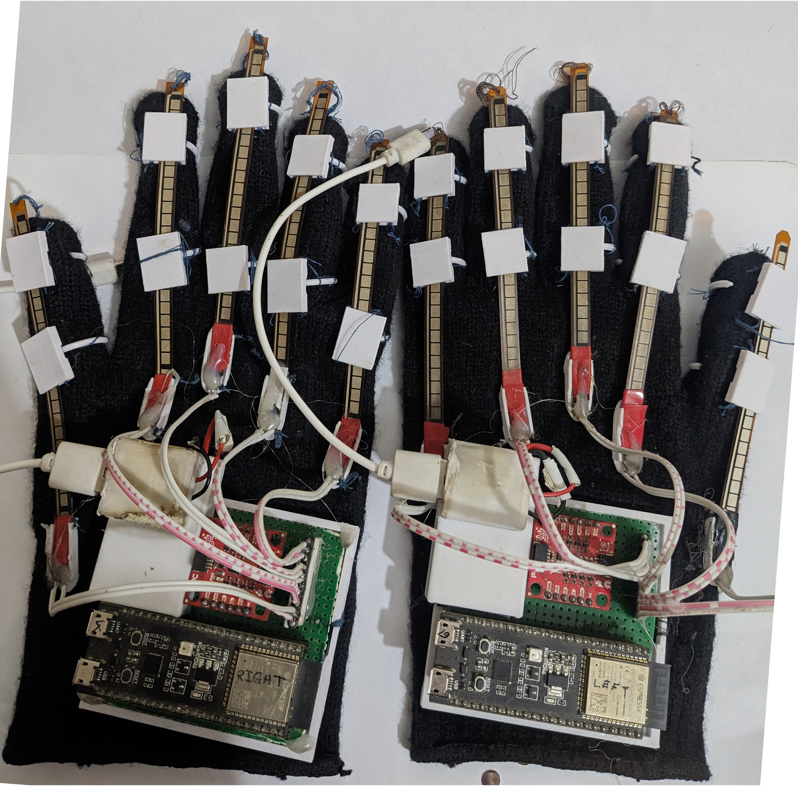
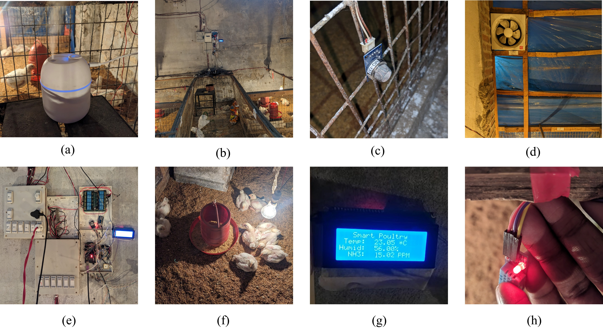
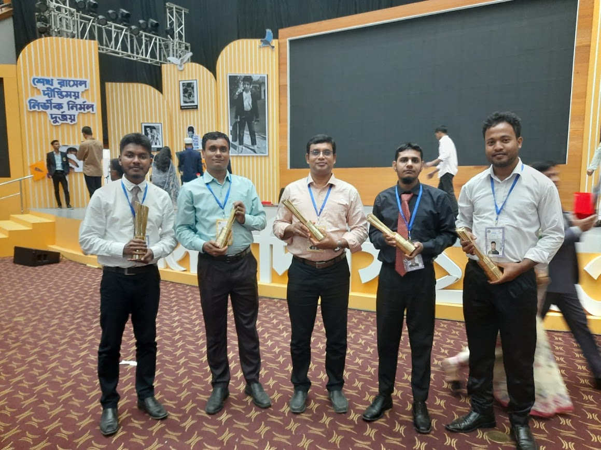
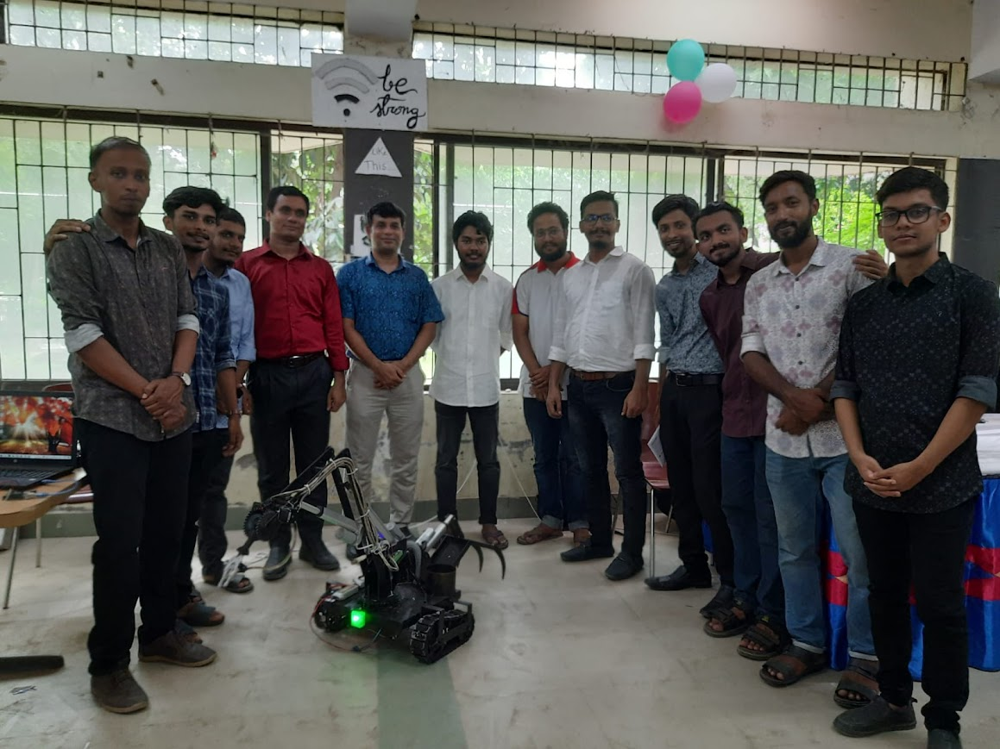

About
I am a research-focused engineer with a strong foundation in information security, embedded AI, and wearable authentication. My goal is to pursue doctoral research that bridges secure systems and intelligent edge computing for human-centered applications.
- Current research: lightweight security protocols for wearable and edge AI systems
- Academic strengths: machine learning, computer vision, embedded systems, and applied cryptography
- Seeking PhD opportunities in the areas of cybersecurity, intelligent IoT, and trusted AI
Research Interests
Information Security, LLM Embedded Systems, Wearable Authentication, IoT-enabled Intelligent Systems, and Data-efficient AI.
Education
Result: 3.67/4.00 | Thesis Topic: Wearable Authentication Systems
Result: 3.43/4.00 | Thesis Topic: Effectiveness of IoT Automation in Poultry
Research & Professional Experience
Research: Implementation and experiment of the research platform in Dhaka, Bangladesh for “Real-time Malicious TLS Traffic Detection using Machine Learning Classifiers
Supervisor: Prof. Dr. Hossen Asiful Mustafa
Research: Design and development of secure, lightweight protocols for wearable authentication systems.
Supervisor: Prof. Dr. Md. Mahabub Hossain
Research: Developed custom IoT-based hardware systems for agricultural poultry automated regulation.
Managed company databases, automated internal report generation workflows, and conducted data analysis for strategic decision-making.
Research Publications
Journal Articles
- M. A. H. Bappy, M. Hoshen, and M. Rafid. "Low-cost IoT-based climate control automation for poultry farms," Cureus Journal of Engineering, vol. 2, eS44388-025-09291-2, 2025. doi:10.7759/s44388-025-09291-2
- M. R. Zaman, M. A. H. Bappy, M. M. Hossain, and M. S. Hossain. "Data-efficient deep learning framework for real-time avian pox identification in broiler chickens," Smart Agricultural Technology, vol. 12, p. 101246, 2025. doi:10.1016/j.atech.2025.101246
Conference Proceedings
- M. H. Rifat, M. A. H. Bappy, et al. "Pioneering BDSL interpretation: Designing an advanced sensor-based data glove for real-time Bangla language interpretation," in PECCII 2026, 2026. doi:10.1109/PECCII70991.2026.11661868
- M. Aktaruzzaman, M. S. Islam, M. A. H. Bappy, et al. "A self-improving robotic system for medical waste management using federated continual learning," in IEEE COMPAS 2025, 2025. doi:10.1109/COMPAS67506.2025.11381841
- M. A. H. Bappy et al. "Fine tuned SLM for accurate and private CWE detection in Python code," in 28th International Conference on Computer and Information Technology (ICCIT), 2025. doi:10.1109/ICCIT68739.2025.11491733
- M. A. H. Bappy, H. A. Mustafa, et al. "Less is more: Minimalist linear interpolation for finger joint angle estimation," in 16th International Conference on Computer and Communication Technology (ICCCTN), In press/Accepted, 2025.
- M. M. Rafid, M. H. Anik, M. A. H. Bappy, et al. "An empirically-validated vision-based reactive control framework for low-cost robotic ground object manipulator," in IEEE COMPAS 2025, 2025. doi:10.1109/COMPAS67506.2025.11381629
Submitted Works
- "Lightweight Hybrid Dynamic Key Management and Forward Secrecy for ESP-NOW Edge IoT Networks," Submitted.
- "A Real-Time IoT and Computer Vision-Based Fall Detection System for Elderly Safety," Submitted.
- "DSTP-ESP: A Dynamic Session-Based TDMA Protocol with Passive Admission for Event-Driven ESP-NOW Sensor Networks," Submitted.
- "Resilient River Monitoring Under Unreliable Internet Connectivity Using Distributed LoRa Multi-Hop Gateway Election," Submitted.
- "A Meta-Analytical Audit of Robustness, Reproducibility, and Deployability in Wearable Biometric Systems," Submitted.
Posters
- M. A. H. Bappy and H. A. Mustafa. "Tap your rhythm, reveal your identity: User-authentication on wearables," IICT Student Poster Competition (2nd Runner Up), BUET, Dhaka, 2026. View poster
- M. A. H. Bappy and H. A. Mustafa. "Finger joint angle estimation methods for 3D printed hand in computer vision," IICT Student Poster Competition (1st Runner Up), BUET, Dhaka, 2025. View poster
Patents
- M. M. Hossain, M. R. Hoshen, M. A. H. Bappy, et al. "Smart Poultry Feeder (SPF)," Patent submitted to DPDT, Bangladesh, 2025.
Selected Projects
Designed a structured orchestration system to prompt Large Language Models to pull and structure critical experimental datasets from academic texts.
Created a targeted generation pipeline leveraging LLMs to simulate Python code bases containing specific, edge-case security weaknesses (CWEs) for training small language models (SLMs).
Built an end-to-end framework integrating text-to-speech, asset assembly, and timing alignment to systematically turn academic scripts into educational video layouts.
Gallery
Highlighted projects, research demonstrations, prototypes, and academic works.

Wearable Authentication Prototype

SLM Dataset Snippet

Robotic Hand

Data Gloves

IoT in Poultry

Smart Bangladesh Award 2023

Poultry Robotic Manipulator
Technical & Research Skills
LLM Ops & AI
Hugging Face, LoRA, PEFT, VLM, prompt engineering
ML & CV
PyTorch, TensorFlow, Keras, OpenCV, MediaPipe, YOLO, SSD
Programming
Python, C/C++, JavaScript, SQL, LaTeX, MATLAB
Embedded Systems
Arduino, ESP32, STM32, NVIDIA Jetson, Raspberry Pi
Honors & Awards
- 2026: Best Poster, 2nd Runner Up, IICT Poster Presentation, BUET. View poster
- 2025: Best Poster, 1st Runner Up, IICT Poster Presentation, BUET. View poster
- 2024: BUET Postgraduate Research Fellowship.
- 2023: Smart Bangladesh Award, presented by the Hon. Prime Minister of Bangladesh.
- 2022: Top Earner Award (LEDP).